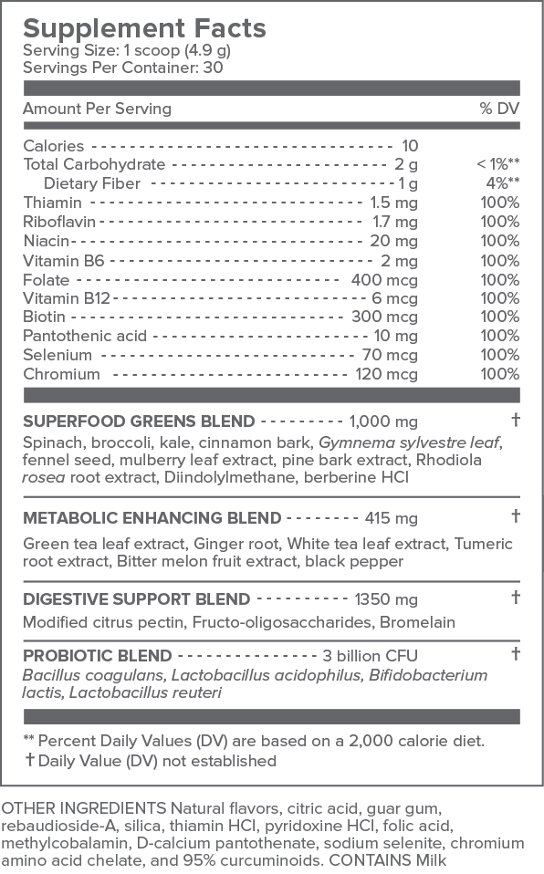

Limited-Time Offer: 24 Hours ONLY
The 25 green, polyphenol-rich superfoods in Primal Plants work to give you more youthful, healthier-looking skin from the inside out. This formula also contains unique digestive and metabolic-enhancing blends to restore balance to your gut bacteria and help you stay slim.
SELECT A PACKAGE TO BEGIN
6 JARS
3 JARS
1 JAR
100% MONEY BACK GUARANTEE
We work hard to formulate the most advanced products on the market. Our 90-Day Customer Satisfaction Guarantee is designed to give you ample opportunity to experience optimal results from your product, completely risk-free.
FAQ
How many jars should I order?
The 3 jar package is our most popular option because it gives you more savings (45% off) and lets you take full advantage of my 90-day money-back guarantee. However, since this sale lasts ONLY for the next 24 hours, I recommend the 6 jar option – which offers maximum savings at 50% off.
What are the ingredients in Gundry MD Primal Plants?
How safe is Primal Plants?
Gundry MD Primal Plants contains only 100% natural and safe ingredients. The formula is tested for quality and purity at an independent, 3rd-party facility. However, as a physician, I recommend consulting with your own health care provider before beginning any new program.
How safe is Primal Plants?
Gundry MD Primal Plants contains only 100% natural and safe ingredients. The formula is tested for quality and purity at an independent, 3rd-party facility. However, as a physician, I recommend consulting with your own health care provider before beginning any new program.
When can I expect results?
Most users report feeling a significant energy boost on their first day of use. Within the first week you'll notice an overall healthier glow to your skin and you'll feel your digestive system flowing like it's supposed to. The deeper metabolic benefits are usually reported with continued use over the first 3-4 weeks. Please use Primal Plants as directed.
How do I use Primal Plants?
Simply mix one scoop into water or a beverage of your choice, mix well, and it's ready to drink! Drink one glass a day (everyday) to get all the skin, metabolic, and digestive benefits from this polyphenol mix. Many users love to mix Primal Plants with their Vital Reds to create a delicious flavor combo!
CUSTOMER REVIEWS
Experienced Dramatic Changes in My Skin
Customer: Michelle B.I have been taking primal plants for about a month now. I have experienced dramatic changes in my skin, not so many breakouts and dryness, and have increased energy to keep me going through the day. I am a mother of 3, work full time, and am enrolled in graduate school as a part-time student. The energy boost I get after taking the supplement helps me keep going throughout the day. I am extremely satisfied with the outcome. I used to also have problems with constipation and bloating, but now I am pretty regular and the bloating has gone away. I would definitely recommend this product to others.
Energy Levels Are Up
Customer: Curtis FraserI take Primal Plants in the morning and Vital reds in the afternoon. I feel my brain fog is gone, energy levels are up, my skin is clearing up and I'm looking younger/more attractive.
I Feel Amazing...
Customer: Kristen B.I came across Dr.Gundry and Primal Plants while I was researching high quality supplements. I decided to give it a chance and haven't looked back. The taste is way better than I thought it would be. And more importantly I feel amazing! I have a lot more energy that allows me to play with my kids longer and I have been able to focus at work better. I have had zero side effects! No gas, bloating, or upset stomach. I can't imagine not starting my day with Primal Plants. I recently went out of town to visit my dad and brought my Primal Plants with me. My dad tried it and immediately ordered a three month supply. Whether or not you're considering this product to clear up any skin imperfections or if you are like me and looking for drinkable easily absorbed nutrition, give it a try!
I Am Seeing Results On My Scale
Customer: Julie S.I have used several green drinks in the past. This is the best tasting, easy to dissolve product I have used. I am seeing results on my scale and that makes me happy too! I notice that after I drink Primal Plants, I feel a little energy boost.
Sleeping and Skin Problems Improved
Customer: Mary F.I have noticed that my sleeping has improved. I had a skin problem on my forehead that my doctor treated and it did not clear up. After taking primal plants for about 3 weeks it started to shrink up and is almost gone.
I Am a Believer!
Customer: Allan B.I am a 73 year old man with a long history on annoying acne. Unhealthy, oily skin treated on and off with antibiotics. Saw your video and was impressed with the fact that a solution to the problem could be had from within! After a month and a half on Primal Plants I was significantly clear! Pleasant to take every morning at breakfast. I am a believer!
Skin Has Cleared Up...Cravings For Sweets Diminished
Customer: Rita B.I've been taking Primal Plants for 7 days now, which I take first thing in the morning, and my skin has cleared up. My face was always more or less broken out. I haven't had clear skin since my teens, even my female co-workers are noticing the difference. An absolute great plus is that my waistline is also shrinking! My cravings for sweets and fatty foods have diminished quite a bit and I attribute these changes since I started taking PP!!!
Lost Pounds With Little Effort
Customer: William G.The green apple taste is good and primal plants has helped me loose pounds in two weeks with very little effort on my part
More Energy and Clarity
Customer: Jennifer B.Better morning start. More energy and clarity.... Been fighting off a seasonal cold and feel that Primal Plants is helping me kick it. Will continue using Primal Plants indefinitely. Thank You for a great health product!
Overall Feeling of Wellness
Customer: Linda A.I have been taking a scoop of Primal Plants each day in my morning smoothie. I have felt increased energy and an overall feeling of wellness. My stomach problems have disappeared and I think it is helping me to lose weight, which I didn't expect.